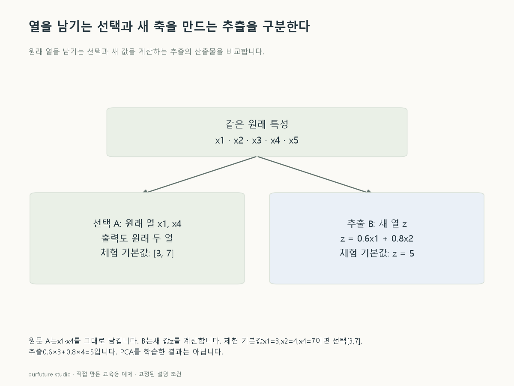

핵심 이론
특성 선택은 원래 입력 가운데 일부를 골라 남기는 처리다. 열 다섯 개에서 x1과 x4를 남겼다면 출력은 두 열이고 각 열의 원래 의미도 유지된다. 어떤 기준으로 골랐는지에 따라 선택 방법은 달라지지만, 남은 열이 원래 열의 부분집합이라는 점은 공통이다. 열 이름을 바꾸었다는 이유만으로 추출이 되는 것은 아니다.
특성 추출은 원래 변수를 변환하여 새 표현을 만든다. z=0.6x1+0.8x2 같은 축은 두 원래 열의 값을 함께 사용하므로 z의 값을 원래 x1 하나의 값이라고 읽을 수 없다. 주성분분석 등의 차원축소가 이런 표현을 만들 수 있다. 새 축이 몇 개 남는지와 그 축이 무엇을 보존하려는지도 따로 설명해야 한다.
선택이나 추출을 했다고 예측 성능이 자동으로 높아지는 것은 아니다. 정보 손실과 잡음 감소가 함께 생길 수 있으므로 동일한 검증 절차로 비교해야 한다. 목표값이나 자료 분포를 사용해 기준을 학습하는 과정은 훈련 자료 안에서 수행한다. 이 글에서는 특정 알고리즘 순위를 매기지 않고 산출물의 의미를 비교한다.
작은 예제로 확인하기
같은 원래 열 x1~x5에서 만드는 두 출력이다.
| 처리 | 출력 | 원래 열 그대로인가 |
|---|---|---|
| A | x1,x4 | 그렇다 |
| B | z=0.6x1+0.8x2 | 아니다 |
A는 원래 두 특성을 선택했고 B는 결합한 한 특성을 추출했다. 출력 차원만 보고 두 방법의 의미가 같다고 판단하지 않는다.
그림으로 확인하기

직접 고르기
A는 x1~x5 중 x1·x4를 남긴다. B는 z=0.6x1+0.8x2라는 새 축을 만든다.
두 처리의 구분으로 맞는 것은?
- 1. A 선택·B 추출
- 2. A 추출·B 선택
- 3. A와 B 모두 원래 열 두 개를 선택
- 4. A와 B 모두 정보 손실이 전혀 없다
정답과 오답의 이유 확인하기
정답 1번 — A 선택·B 추출
A의 출력은 원래 열의 부분집합이고 B의 출력은 여러 열을 결합한 새로운 표현이다.
- ② 산출물의 구조를 뒤집었다.
- ③ B는 새 축 하나이고 원래 두 열이 그대로 남지 않는다.
- ④ 선택·축소 과정에서 필요한 정보가 사라질 수도 있다.
조건 하나 바꾸어 풀기
A에서 남긴 x1·x4의 이름만 a·b로 바꾸었다. 그 사실만으로 추출로 바뀔까?
풀이: 아니다. 값과 의미를 그대로 둔 이름 변경이라면 선택이다.
이름보다 원래 특성을 그대로 골랐는지 새 표현을 계산했는지가 기준이다.
다시 떠올릴 단서
원래 열을 골랐는가, 새로운 축을 만들었는가.
근거와 적용 조건
- scikit-learn: Feature selection — 1.13 overview・Removing features with low variance. 확인일 2026-10-30.
- scikit-learn: Decomposing signals in components — 2.5.1.1 PCA as learned linear projection（선택과 새 축의 구분을 위한 보조 정의）. 확인일 2026-10-30.
상황·수치·보기·조건 변경은 자체 교육 예제다. 민간 복원 문항의 공식 정답이나 실제 성능·학습 효과를 뜻하지 않는다.
읽은 내용을 적용해 보기
표현의 의미를 비교한다. 주어진 계수로 계산할 뿐 PCA 학습이나 예측 성능 비교를 수행하지 않는다.